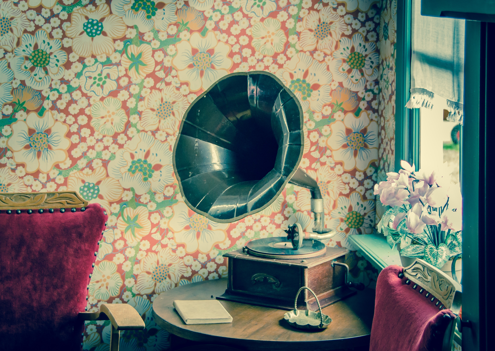

3 Kreative Idéer
Vi har opsat 3 gode kreative idéer du muligvis ikke havde overvejet at implementere i dit design. Økonomisk er dette nogle gode muligheder, og er noget der kan findes de fleste steder.
1.Retro Look
Retro tema er blevet meget moderne i boligindretning igen, og man ser at flere implementere indretningsidéer fra den tidligere alder, i det nuværende design. Prøv at benytte dette til en fordel, da det åbner for en masse muligheder i din indretning.
2.Enkel væglampe

Med få remedier kan du skabe din egen unikke lampe. Rør, beslag, bøjninger, fatning og pære fra byggemarkedet samles, ledningen føres igennem rørene og fatningen monteres. Som belysningskilde er her valgt en smuk glødepære.
3.Pang Farver

Mal væggen en skrigende farve. Det kan give mange forskellige resultater. Benyt farver til at skabe harmoni i dit hjem. Ikke vær bange for resultatet.